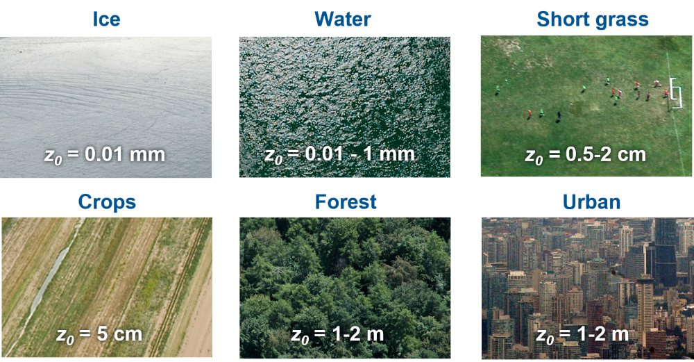

General characteristics of how wind speed varies with height
For any given weather condition, there is a theoretical equilibrium wind speed, called the geostrophic wind \(G\), that can be calculated for frictionless conditions. However, steady-state winds in the ABL are usually slower than geostrophic (i.e., subgeostrophic) because of frictional and turbulent drag of the air against the surface.
Today’s learning objectives
Describe how the mean velocity profile is linked to the momentum flux.
Understand the ‘famous’ logarithmic wind profile equation.
The vertical profile of horizontal wind
Series of anemometers at different heights z over an extensive flat
This is the vertical profile of mean horizontal wind ū and shows that the wind gradient (or ‘wind shear’) decreases as z increases.
Mixing Length
The characteristic height for mixing to occur is the mixing length \(l\) and is likely related to the mean size of eddies.
Assume an eddy at level (\(z+l\)) with mean velocity \(\bar{u}_{(z+l)}\) moves down to \(z\) where mean velocity \(\bar{u}_{(z)}\) is less, by \(u^{\prime}\):
\[
u^{\prime} = \bar{u}_{(z+l)}-\bar{u}_{(z)}
\]
so: \[
u^{\prime} = l\small\frac{\delta u}{\delta z}
\qquad(1)\]
i.e. extra velocity = increment in height x rate of change of velocity with height.
The mixing length approach
If turbulence is assumed to be isotropic (\(u^{\prime} \approx w^{\prime}\)), i.e., eddies are symmetric:
\(\tau = -\rho u^{\prime}w^{\prime} \approx \rho u_*^2\) (see previous lecture) it follows \(u^{\prime} \approx w^{\prime} \approx u_*\) and we can define \(u_*\) in terms of the mixing lenght:
i.e. the wind gradient is inversely related to the size of the eddies. As we approach the ground the spectrum of eddy sizes is restricted by the physical barrier.
The mixing length approach
If turbulence is assumed to be isotropic (eddies are symmetric) \(u^{\prime} \approx w^{\prime}\) and \(\tau = -\rho u^{\prime}w^{\prime}\) and \(\tau = \rho u_*^2\) (see previous lecture) it follows \(u^{\prime} \approx w^{\prime} \approx u_*\) and we can write:
i.e. the wind gradient is inversely related to the size of the eddies. As we approach the ground the spectrum of eddy sizes is restricted by the physical barrier.
The vertical profile of horizontal wind
The form of the vertical profile of horizontal wind is found to be:
The constant \(k\) is von Kármán’s constant (\(\approx\) 0.41)
The logarithmic wind law
Integration of Equation 4 requires knowledge of the exact height where is \(\bar{u}\) zero (integration constant). In practice this depends on the roughness of the ground so we set a roughness length (\(z_0\), units m) and restrict the equation to \(z > z_0\).
In neutral conditions, the slope of wind speed with \(ln(z)\) is exactly linear and both, \(u_*\) and \(z_0\) can be determined from analysis of wind data from several levels.
The y-intercept on a log-linear plot will give us \(z_0\)
The slope on a log-linear plot will give us \(k/u_*\)
Semi-log paper
On this paper, you can directly enter wind velocity on the x-axis (linear scale) and height on the y-axis (logarithmic scale).
First label your own axes (orders of magnitude on y-axis) to fit data optimally on paper. Then enter data points.
You can fit a line (e.g. by hand using a ruler). The intercept with the y-axis gives you an estimate of z0.
Make Your Own Log-Plot
import pandas as pdimport numpy as np# Load a wind profileprofile = pd.read_csv('Data/Profile.csv')# Calculate ln(z)profile['lnz']=np.log(profile['z (m)'])# Find the intercept of a linear fitm,b=np.polyfit(profile['u (m/s)'],profile['lnz'],1)print(f'm = {m}; b = {b}')
m = 1.1751196328367708; b = -2.0986472898421247
import matplotlib.pyplot as plt# Plot the resultsfit,ax=plt.subplots()profile.plot(x='u (m/s)',y='lnz',ax=ax,marker='*',label='log-profile')ax.scatter(0,b,marker='*',color='r',label='intercept')ax.grid()ax.set_title('Log Wind Profile')ax.set_ylabel('ln(z)')ax.set_xlabel('U (m/s)')
Log-Profile (iClicker)
import pandas as pdimport numpy as np# Load a wind profileprofile = pd.read_csv('Data/Profile.csv')# Calculate ln(z)profile['lnz']=np.log(profile['z (m)'])# Find the intercept of a linear fitm,b=np.polyfit(profile['u (m/s)'],profile['lnz'],1)print(f'slope (m) = {m}; intercept (b) = {b}')
From this, what would be the value of \(z_0\) in meters?
A \(z_0 = b\)
B \(z_0 = ln(b)\)
C \(z_0 = e^{b}\)
D \(z_0 = e^{m}\)
E \(z_0 = ln{m}\)
Log-Profile (iClicker)
import pandas as pdimport numpy as np# Load a wind profileprofile = pd.read_csv('Data/Profile.csv')# Calculate ln(z)profile['lnz']=np.log(profile['z (m)'])# Find the intercept of a linear fitm,b=np.polyfit(profile['u (m/s)'],profile['lnz'],1)print(f'slope (m) = {m}; intercept (b) = {b}')
Same reference velocity $u_{ref} but different \(z_0\) and shear stress
Same shear stress but different roughness
Try yourself
import numpy as npimport matplotlib.pyplot as pltk =0.41# short grass (0.01), trees (1.0)z0_list = [0.01,1.0] # weak winds (0.1), moderately strong winds (0.5)u_star_list = [0.1,0.5]# define a height profilez = np.linspace(0.1,25)# define a plot and loop through scenariosfig,ax=plt.subplots(1,2)for u_star,c inzip(u_star_list,['r','b']):for z0,l inzip(z0_list,[':','-']): u_bar_z = u_star/k*np.log(z/z0) u_bar_z[u_bar_z<0]=np.nan ax[0].plot(u_bar_z,z,color=c,linestyle=l) ax[1].plot(u_bar_z,np.log(z),label=f'z0={z0}\nu*={u_star}',color=c,linestyle=l)# format the graphax[1].legend()ax[0].set_ylabel('z (m)')ax[0].set_title('Profile')ax[1].set_ylabel('ln(z)')ax[1].set_title('Log-Linear-Profile')for a in ax: a.set_xlabel('u (m/s)') a.grid()plt.tight_layout()
Roughness length \(z_0\) - examples

Estimating the roughness length z0
If observations are not available, a first order estimate of z0 can be obtained from a geometric analysis of the surface roughness elements.
Over tall roughness elements the straight line plot of ū vs. ln(z) breaks down - so we need to introduce an effective height of mean drag - zero plane displacement \(z_d\).
It is possible to determine zd from analysis of wind observations:
Iteration using trial values to find \(z_d\) which straightens plot \(\bar{u}\) vs. \(ln(z- z_d)\) under neutral conditions.
A rule-of-thumb says: \(z_d = 2/3 z_h\), but it omits density consideration.
\(\bar{u}_z\) should reach zero at the height \(z_d+z_0\).
However, this is not observed in vegetation canopies.
We observe wind speed > 0 even below \(z_d+z_0\).
The vertical profile of horizontal wind
In most canopies (forests, orchards, crops) we find the logarithmic wind profile well above the mean canopy height h, and an exponential profile within the canopy.
The Exponential Wind Profile
The mean wind profile inside homogeneous canopies can be approximated as exponential function (z < h):
\(\alpha\) is an empirical constant, the canopy’s wind extinction coefficient.
Table 1: Alpha values for different canopies
Wind extinction coefficients
α
Wheat
4.0
Corn
2.0
Sunflower
1.3
Spruce
2.4
S. P. Arya (1998): ‘Introduction to Micrmeteorology’
Take home points
The wind profile in the surface layer follows the logarithmic law.
The integration constant of the log-law is the roughness length z0, which depends on the surface’s roughness.
Over tall roughness elements the straight line plot of ū vs. ln(z) breaks down - so we need to introduce an effective height of mean drag - zero plane displacement zd.